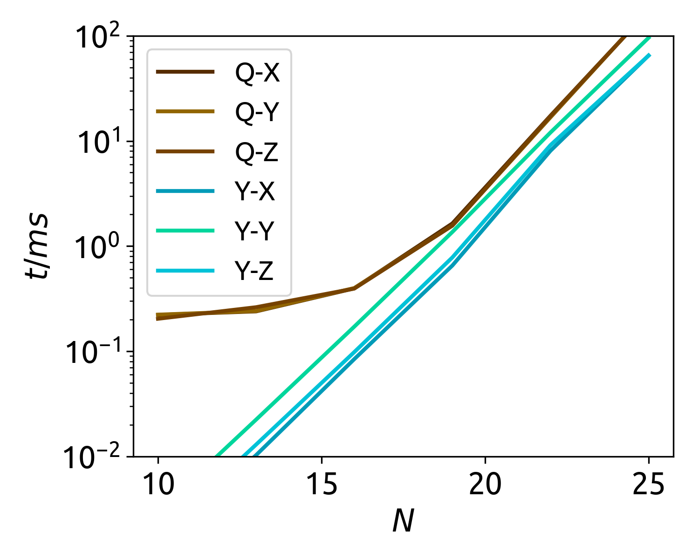
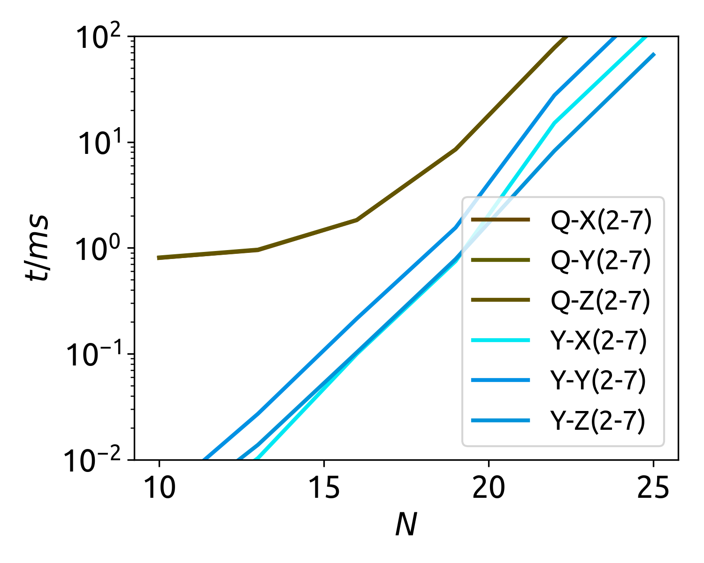
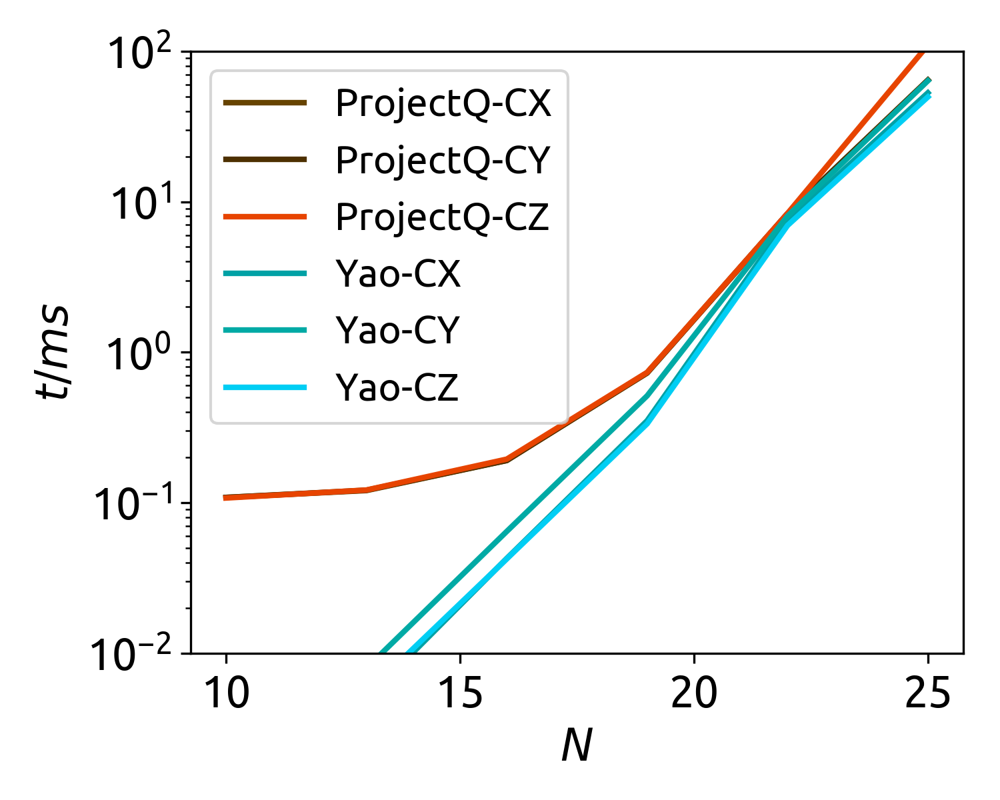
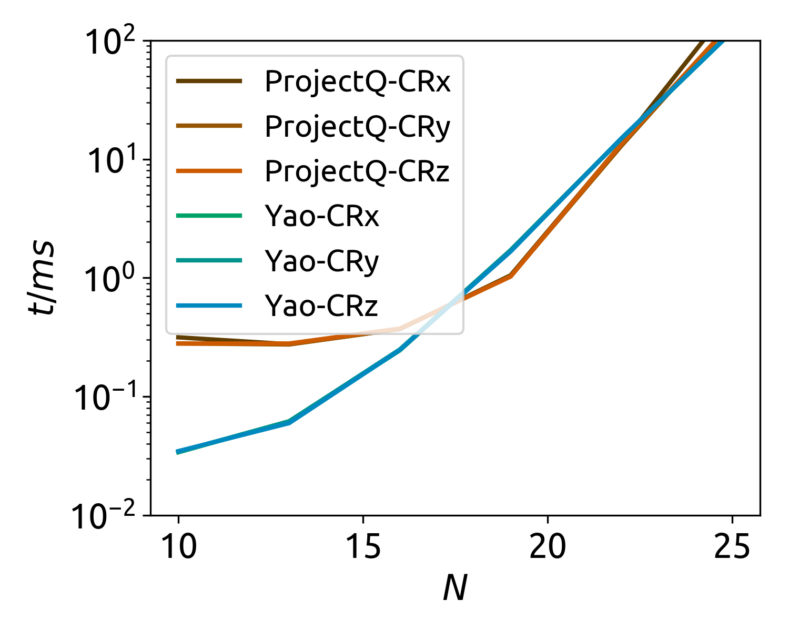
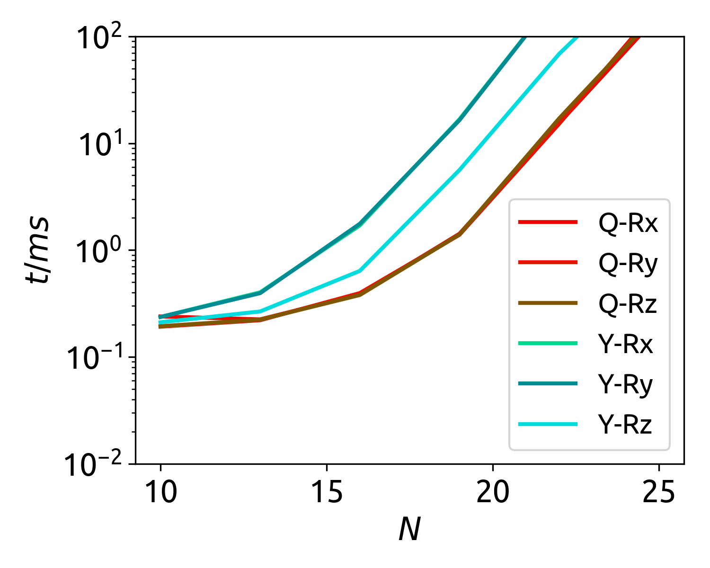
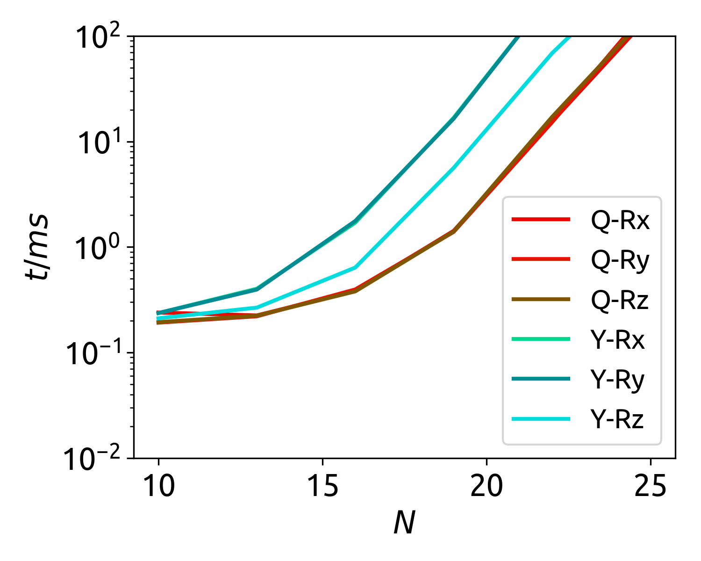

Benchmark with ProjectQ
ProjectQ is an open source software framework for quantum computing. Here we present the single process benchmark result
     

Here, we see the reason why we need Block system and multiple dispatch to do structure specific optimization.
ProjectQ Refs
Damian S. Steiger, Thomas Häner, and Matthias Troyer "ProjectQ: An Open Source Software Framework for Quantum Computing" [arxiv:1612.08091]
Thomas Häner, Damian S. Steiger, Krysta M. Svore, and Matthias Troyer "A Software Methodology for Compiling Quantum Programs" [arxiv:1604.01401]
CPU Information
Architecture: x86_64
CPU op-mode(s): 32-bit, 64-bit
Byte Order: Little Endian
CPU(s): 48
On-line CPU(s) list: 0-47
Thread(s) per core: 2
Core(s) per socket: 12
Socket(s): 2
NUMA node(s): 2
Vendor ID: GenuineIntel
CPU family: 6
Model: 79
Stepping: 1
CPU MHz: 2499.921
BogoMIPS: 4401.40
Virtualization: VT-x
L1d cache: 32K
L1i cache: 32K
L2 cache: 256K
L3 cache: 30720K
NUMA node0 CPU(s): 0-11,24-35
NUMA node1 CPU(s): 12-23,36-47Julia Version
Julia Version 0.7.0-alpha.147
Commit 5e3259e (2018-06-16 18:43 UTC)
Platform Info:
OS: Linux (x86_64-linux-gnu)
CPU: Intel(R) Xeon(R) CPU E5-2650 v4 @ 2.20GHz
WORD_SIZE: 64
LIBM: libopenlibm
LLVM: libLLVM-6.0.0 (ORCJIT, broadwell)